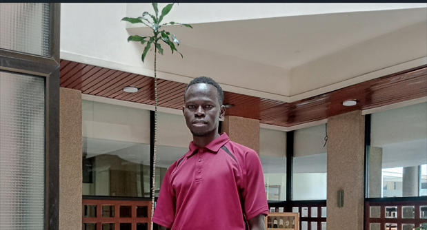

Amanya Simon

Contacts
Hobbies
Summary
Dedicated and results-driven teacher with 12 years of experience,
adept at achieving excellent outcomes even in challenging
environments such as congested refugee classrooms. Since 2017,
transitioned into data collection and research roles, collaborating
with institutions like Oxford University. Skilled in interviews,
data verification, coordination, and reporting.
Education Background
-
Certificate in Web Development (August 2025
-Present)
Udemy bootcamp
- Bachars in Education (May 2012 – Dec 2015)
Masinde Muliro University of Science and Technology,
Kakamega, Western Kenya
-
Kenya Certificate of Secondary Education (Jan 2008 - Nov
2008)
Brightstar High School, Nairobi, Kenya
Work Experience
Data Enumerator (Dec 2024 – Jan 2025)
Listing and Mapping – Kenya National Bureau of Statistics
(KNBS),
Kakuma Refugee Camp and Kalobeyei Integrated Settlement
-
Mapping and listing the data enumeration area
-
Taking the household details in preparation for data
collection
-
Writing the KNBS numbers on the door-posts of the listed
households
-
Coordinating with the village leaders who helped talk to
their
communities about the activity
- Research Assistant (Oct 2022 - Sep 2023)
Refugees Economic – Oxford University, Kakuma Refugee Camp
-
Conducting oral interviews in the refugee community
-
Coordinating the smooth running of the project with the
research team
-
Verifying the collected data by calling the respondents
-
Attending meetings organized by the research team and
discuss the challenges in the field
-
Making calls to respondents to book appointments for the
interviews
- Primary School Teacher (Sep 2015 - Sep 2022)
Finn Church Aid (FCA) - Friends Primary School, Kalobeyei
Settlement
-
Developed teaching and learning resources
-
Developed professional documents and maintained class
records
-
Performed the teaching duties successfully
-
Tracked the performances of learners in class and advise
them accordingly
-
Imparted good morals through role modeling
Skills
-
Ability to work and achieve results within the stipulated time
frame
-
Ability to maintain professionalism within the work environment
-
Efficient communication skills for effective presentation of
information while discussing with peers, co-workers and clients
-
A team player with ability to listen and learn from the rest of
the team members about how certain tasks should be handled
Referees
- Ronald Kirui
Field Supervisor – Kenya National Bureau of Statistics (KNBS)
+254721998198
- Patrick Mutinda
Research assistant – Refugees Economic, Oxford University
+254722000088
- Melan Adoani
Head mistress, Friends Primary School, Kalobeyei
+254724948486